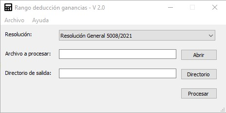

“Rango Impuesto a las ganancias – Segundo párrafo” es una aplicación creada con el objetivo de calcular, a partir del ingreso del promedio bruto, la deducción correspondiente al segundo párrafo de ganancias, introducido a partir de las modificaciones de la RG 5008/2021.

La aplicación fue diseñada para ser de un manejo muy fácil. Para esto, primero, el usuario deberá seleccionar que escala quiere procesar (las opciones disponibles son: Resolución General 5008/2021', 'Resolución General 5076/2021' y ‘Actualización RIPTE 2022’). Luego, deberá seleccionar el archivo a procesar, cual deberá de tener una extensión ‘.xlsx’ (ver formato). Para, finalmente, seleccionar la ubicación donde se creará el archivo con los resultados.
Al dar click, sobre el botón procesar, aparecerá un mensaje dando aviso del inicio de la ejecución y, luego de un breve momento, se generará el archivo con los resultados.
El primer requisito, para poder procesar el archivo, es que tenga la extensión “.xlsx”. El segundo requisito es respetar que el mismo contenga las siguientes columnas: N° Legajo, N° Liquidación, Código, Importe.
Es muy importante respetar los nombres de las columnas ya que, a la menor diferencia en las mismas, el programa no podrá procesar el archivo. Para evitar estos inconvenientes, en la carpeta raíz de este programa, podrán encontrar el archivo “subida.xlsx", donde podrán ingresar la información necesaria.
Si bien, el archivo xlsx consta de cuatro columnas, la única que es obligatoria es la de importe. Donde se ingresarán los promedios brutos a partir de los cuales se calcularán las deducciones del segundo párrafo.
Como observación final, vale aclarar que el separador decimal que soporta el programa es el punto (.).